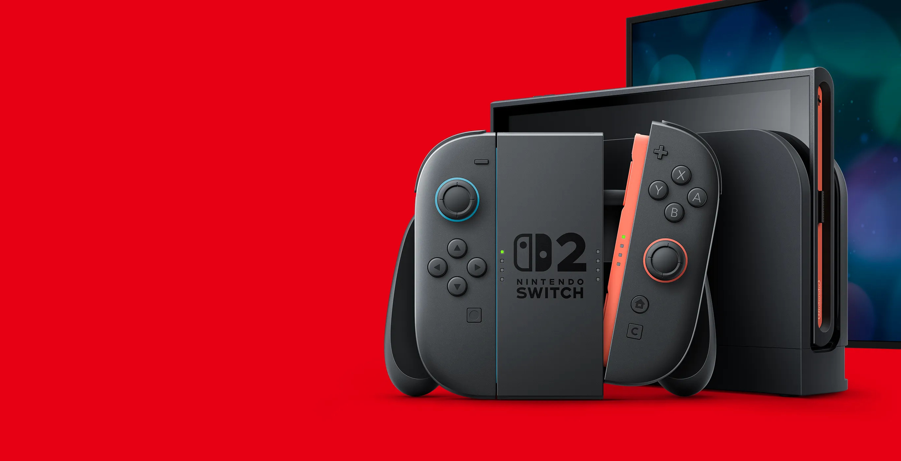
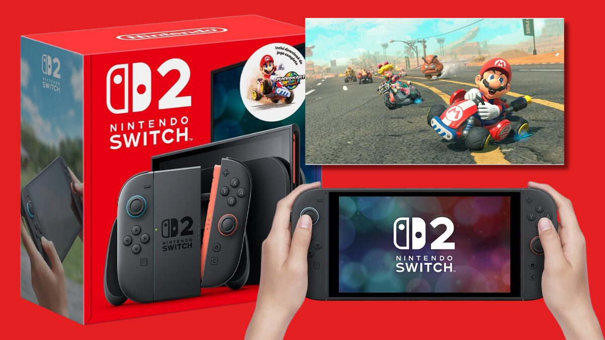

Resumo do Lançamento do Nintendo Switch 2
O Nintendo Switch 2 foi oficialmente anunciado com lançamento global previsto para 5 de junho de 2025, com preço de US$ 449 (aproximadamente R$ 2.300). Uma edição especial em bundle com Mario Kart World estará disponível por US$ 499 (aproximadamente R$ 2.550) por tempo limitado. No Brasil, o preço sugerido do console é de R$ 4.499,90, e o bundle com Mario Kart World custará R$ 4.799,90.
Principais características e novidades
- Desempenho: Significativa melhoria na CPU e GPU (com processador NVIDIA customizado), prometendo gráficos mais detalhados, tempos de carregamento mais rápidos e jogabilidade mais fluida. Há suporte para DLSS e ray tracing por hardware.
- Tela: Tela LCD de 7,9 polegadas com resolução de 1920x1080, suporte a HDR10 e taxa de atualização variável (VRR) de até 120 Hz.
- Armazenamento: 256 GB de armazenamento interno (UFS), expansível via cartões microSD Express de até 2TB.
- Áudio: Qualidade de áudio aprimorada com som espacial 3D.
- Joy-Con 2: Novos controles Joy-Con que se conectam magneticamente (em vez de deslizar), ligeiramente maiores e com um novo botão "C" para funcionalidades como o novo "GameChat". Os Joy-Cons agora podem ser usados de forma invertida e possuem controles de mouse integrados.
- GameChat: Novo sistema de chat de voz integrado ao sistema, com uma interface que lembra o Discord, permitindo comunicação durante os jogos online.
- Dock: Novo design com bordas mais suaves e arredondadas, com duas portas USB 2.0, HDMI e porta LAN. Suporta saída de vídeo de até 4K (3840x2160) a 60fps no modo TV e até 120fps em resoluções mais baixas.
- Retrocompatibilidade: O Switch 2 terá retrocompatibilidade com jogos do Nintendo Switch (tanto físicos quanto digitais), embora alguns jogos possam não ser totalmente compatíveis ou otimizados.
- Design: O design geral lembra o Switch original, mas com uma tela maior e bordas mais finas. O novo suporte traseiro é ajustável em múltiplos ângulos.
- Nintendo Switch Online: O serviço online estará disponível no Switch 2, incluindo o novo recurso GameChat.
- Acessórios: Um novo Pro Controller com entrada para fone de ouvido, botão "C" e botões traseiros personalizáveis foi anunciado.
Jogos
- Mario Kart World será lançado junto com o console e permitirá até 24 jogadores por corrida.
- Versões aprimoradas de Kirby and the Forgotten Land e The Legend of Zelda: Tears of the Kingdom estão confirmadas para o Switch 2, com melhorias gráficas e de desempenho.
- Novos amiibo de personagens de Street Fighter 6 e mais amiibo de The Legend of Zelda: Tears of the Kingdom também estão a caminho.
Disponibilidade
- Pré-vendas já estão abertas em algumas lojas.
- O lançamento global está marcado para 5 de junho de 2025.
Em resumo, o Nintendo Switch 2 representa uma evolução significativa em termos de poder de processamento, gráficos e funcionalidades online, mantendo o conceito híbrido que tornou seu antecessor um sucesso.